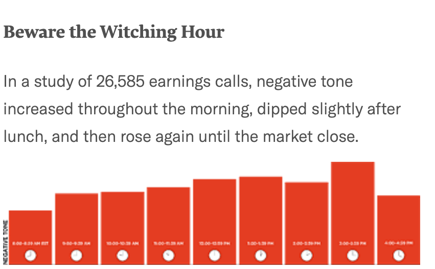

Time Hacking for Engineers
I’d like to share some findings from a book I read recently titled: When: The Scientific Secrets of
Perfect
Timing,
and how as software engineers we can use these findings to ensure we're working on the right tasks at the
right time.
It turns out, timing is not an art, it’s actually a science
Let's start with some research...
Twitter Sentiment Study
In 2011, two Cornell University sociologists analyzed over 500M tweets from 2.4M
users in 84 countries over two years.
They fed tweets into a system called LIWX (Linguistic Inquiry and Word Count) to analyze emotion
Found positive affect (language expressing feelings of being active, engaged, hopeful) generally rose
in
the morning,
plummeted in the afternoon, and climbed back up again in the early evening
Found the same temporal affective patterns regardless of geographic region, ethnicity, religion or
race
Daily pattern looks like: A peak, A trough, and A rebound
Skeptic Says
Results might not be that accurate due to twitter character limit
People are not their most authentic selves on social media üòÆ
Day Reconstruction Method
2006 study by behavioral scientists asked over 900 American women (mix of races, ages, household
incomes
and education levels) to characterize their emotions at frequent intervals throughout the day: happy,
frustrated, enjoying myself, annoyed etc.
Researches found consistent and strong bimodal pattern: Positive affect climbed in the morning hours,
reaching optimal emotional point around midday, then good mood plummeted and stayed low throughout
afternoon,
and rose again in the early evening.
Researchers also found negative affect (feeling frustrated, worried, hassled) showed a reverse
pattern -
rising in the
afternoon and sinking as the day drew to a close.
CLICK Combining positive and negative to chart net good mood
(hourly ratings
for happiness and subtract ratings for frustration) - pattern is: Peak, Trough, Rebound
Skeptic Says
So what? Sometimes people are in a good mood, sometimes bad, whatever, can’t always be happy.
Mood is an internal state, surely that couldn’t have external consequences… could it?
From Mood Swings to Stock Swings

In a 2013 study, 3 American business school professors analyzed more than 26,000 earnings calls from
over 2,100 public
companies over 6 and a half years using linguistic algorithms similar to those used in the Twitter study
They examined whether the time of day influenced the emotional tenor of these critical
conversations and, as a
consequence, perhaps even the price of the company’s stock.
Calls held first thing in the morning turned out to be reasonably upbeat and positive.
As the day progressed, the ‚Äútone grew more negative and less resolute.‚Äù�
In the afternoon, negativity deepened, with mood recovering only after the market's closing bell.
Amazingly, his pattern held “even after controlling for factors such as industry norms, financial
distress, growth opportunities, and the news that companies were reporting.”. Generally: afternoon calls
“were more negative, irritable, and combative” than morning calls.
CLICK: time of the call and the subsequent mood it engendered influenced companies' stock prices. Shares
declined
in response to negative tone—again, even after adjusting for actual good news or bad news—“leading to
temporary stock mispricing for firms hosting earnings calls later in the day.” (share prices eventually
righted themselves)
These results show that economic rationality is no match for a biological clock forged during a few
million years
of evolution. Even “sophisticated economic agents acting in real and highly incentivized settings are
influenced by diurnal rhythms in the performance of their professional duties.”
Skeptic Says
Ok, so maybe moods affect outcomes in high stakes situations...
But I'm not CEO of a Fortune 500 company, how does this affect "regular" people?
The Linda Problem
Linda is thirty-one years old, single, outspoken, and very bright. In college, Linda majored in philosophy. As
a student, she was deeply concerned with issues of discrimination and social justice, and participated in
antinuclear demonstrations.
Which is more likely ?
a. Linda is a bank teller.
b. Linda is a bank teller and is active in the feminist movement.
Take a few moments to read the following problem and think about the answer.
Intuition would suggest (b) is the answer, because of Linda's concern for social justice.
CLICK BUT correct answer is (a): This is not an opinion question, it's entirely a matter of logic
Remember, question asked which is more CLICK likely
Bank tellers who are also feminists—just like bank tellers who yodel or despise
cilantro—are a
subset of all bank tellers, and subsets can never be larger than the full set they're a part of.
In 1983, two researchers from Stanford and UBC posed Linda problem to study participants at different
times of day (9am
and 8pm) to illustrate “conjunction fallacy” - one of the ways in which our reasoning goes awry.
They found people were much more likely to answer correctly earlier in the day than later.
Vigilance
Our cognitive abilities do not remain static over the course of a day. During the sixteen or so hours
we’re awake, We
are smarter, faster, dimmer, slower, more creative, and less creative in some parts of the day than
others.
Linda problem is an analytic task - has a single correct answer that can be reached via logic
Adults tend to perform best on this sort of thinking during the mornings - when they are most VIGILANT
With Linda Problem, politically tinged material about Linda's college experiences is a distraction. It
has no
relevance in resolving the question itself. When our minds are in vigilant mode, we can disregard such
distractions.
But vigilance has limits, after several hours mental guards grow tired, - Then sloppy logic, irrelevant
information can "sneak in"
Alertness and energy levels tend to plummet during afternoons, with that comes a corresponding fall in
ability to
remain focused and analytic powers decline.
Skeptic Says
Yeah yeah I get it, do important stuff in the morning.
Not so fast!
Not all brainwork is the same
The Coin Problem
Ernesto is a dealer in antique coins. One day someone brings him a beautiful bronze coin. The coin has an
emperor’s head
on one side and the date 544 BC stamped on the other. Ernesto examines the coin—but instead of buying it, he
calls the
police. Why?
This is an “insight problem”
Unlike Linda problem, Reasoning in a methodical, algorithmic way won’t yield a correct answer.
Typically people start with a systematic approach, hit a wall, get frustrated, then eventually
experience a “flash of
illuminance” - an aha! moment that helps them see the facts in a fresh light
Insight
Vigilance ⬇️ Insight ⬆️
The date on the coin is 544 BC, or 544 years before Christ. That designation couldn’t have been used
then because Christ
hadn’t been born—and, of course, nobody knew that he would be born half a millennium later. The coin is
obviously a fraud.
In a 2011 study two psychologists posed the coin
problem to study participants who said they did their best thinking in the morning.
Half group tested between 8:30-9:30am and other half between 4:30-5:30pm.
Morning thinkers were more likely to figure out the coin problem … in the afternoon
Why?
Vigilance aka “inhibitory control” is strongest in the morning - this helps our brains solve analytic
problems by keeping out distractions
CLICK But insight problems require LESS vigilance, a few distractions can help us spot connections we
might
have
missed when our filters were tighter.
For analytic problems, lack of inhibitory control is a bug. For insight problems, it’s a feature.
Summary So Far...
For most people, mood oscillates during the day experienced as a Peak, Trough, and Rebound.
For most mood follows a common pattern: a peak, a trough, and a rebound, which shapes a dual pattern of
performance
In the mornings, during the peak, most of us excel at Linda problems: analytic work that requires
sharpness, vigilance,
and focus.
Later in the day, during the recovery, most of us do better on coin problems: insight or creative work
that
requires less
inhibition and resolve.
Skeptic Says
kk, analytic stuff in the morning, insight work later in the day.
Determine Your Chronotype
What time do you usually go to sleep?
What time do you usually wake up?
What is the midpoint of those two times?
Everyone has a “chronotype”: Pattern of circadian rhythms that influence our physiology and psychology
You may have heard of "early birds" and "night owls", but the actual categorization is more nuanced.
To determine yours, let's go through a simple exercise together
Think about days when you're not required to wake up at a specific time
Larks, Owls, and Third Birds
Now plot your midpoint on the x-axis of this chart.
For example mine is...
If your midpoint of sleep is before 3am, you're a lark'
If your midpoint is after 6am, you're an owl
In between, you're a third bird
Most people are neither Larks nor Owls, but somewhere in between “Third bird”
when plotting peoples chronotypes, results look remarkably like a bell curve, except Owls have a longer
tail - i.e.
extreme owls outnumber extreme larks.
Owls are Different
More vigilant at 8pm than 8am
Peak much later in the day
Better at insight problems early in the morning
Recall the Linda problem: most people solve these types of problems better at 8am than 8pm
But Owls are the reverse, more likely to avoid the conjunction fallacy and produce correct answer at 8pm
rather than
8am. Owls reach their peak much later into the evening hours.
Also recall the Coin problem - larks and third birds tend to have flash of insight later in the day
when inhibitions
are low. But owls do better on insight problems early in the morning, during their less optimal time
Optimizing Your Day
What's your chronotype?
What kind of work are you doing?
What time of day is it?
So how can we make use of all this practically speaking?, Ask yourself 3 questions...
CLICK Determine your chronotype (lark, third bird, owl)
CLICK Understand the type of task you're working on (analytic, insight)
CLICK Select the appropriate time to do this task, here's a helpful table.
If you have even modest control over your schedule, try to nudge your most important work, which usually
requires
vigilance and clear thinking, into the peak
Push your second-most important work, or tasks that benefit from disinhibition, into the rebound period.
Whatever you do, do not let mundane tasks creep into your peak period.
If possible, try to avoid doing much of anything in trough, but if you must, limit to
mundane/administrative tasks.
Software Engineering Tasks
Analysis, Design Analytic
Build/Implementation Analytic
Code Reviews Analytic
Debugging Insight
Checking email, slack Mundane
Standup Mundane
Admin (eg: Jira) Mundane
Now let's apply this to software engineering
Identify tasks that make up your day, for example here's mine
CLICK Classify by analytic, insight, mundane and schedule according to your chronotype
Note debugging can be an insight task, think of those difficult problems where you've tried all the
obvious things but nothing is working. Try pushing this to your recovery period where you're more likely
to experience an "aha" moment and solve the issue.
As a lark, I've noticed an improvement in my performance on analytic tasks since scheduling these first
thing in the morning. I used to always start my day with checking slack and email but have since moved
these to after lunch where vigilance is not required.
And any debugging tasks I'm stuck on get moved to later in the afternoon.
Implementation
Remote Work + Async = Schedule Control
Team of larks & third birds? Try standup in the afternoon or Slack
Have to do analytic work during non peak hours? Awareness + slow down
Being able to organize your day like this requires some degree of control over your schedule
CLICK Remote
work can facilitate this somewhat, but asynchronous work can take this even further.
CLICK Consider discussing with your team whether rescheduling standup could facilitate uninterrupted
focus
time. Traditionally standup is scheduled in the morning, but if your team is composed of larks and third
birds, that's an interruption of everyone's peak focus time. Or consider as our team has done, moving
standup to an async channel on Slack.
CLICK Sometimes an emergency or deadline comes up and you're forced to do deep analytical tasks during
your
non peak
hours, in this case, even just being aware that you're not at your peak and slowing down can help, as can
taking a short break.
References
Here are some useful links to the book, or if you're not yet ready to commit to the entire book, listen to
a podcast interview with the author
Also I've linked to a blog post I published on asynchronous work, one of the benefits of which is control
over your schedule.
What are your thoughts?
Have you noticed your ability to focus on analytic tasks varies throughout the day?
Do you feel like you have sufficient control over your schedule to arrange your day to take advantage
of this research?